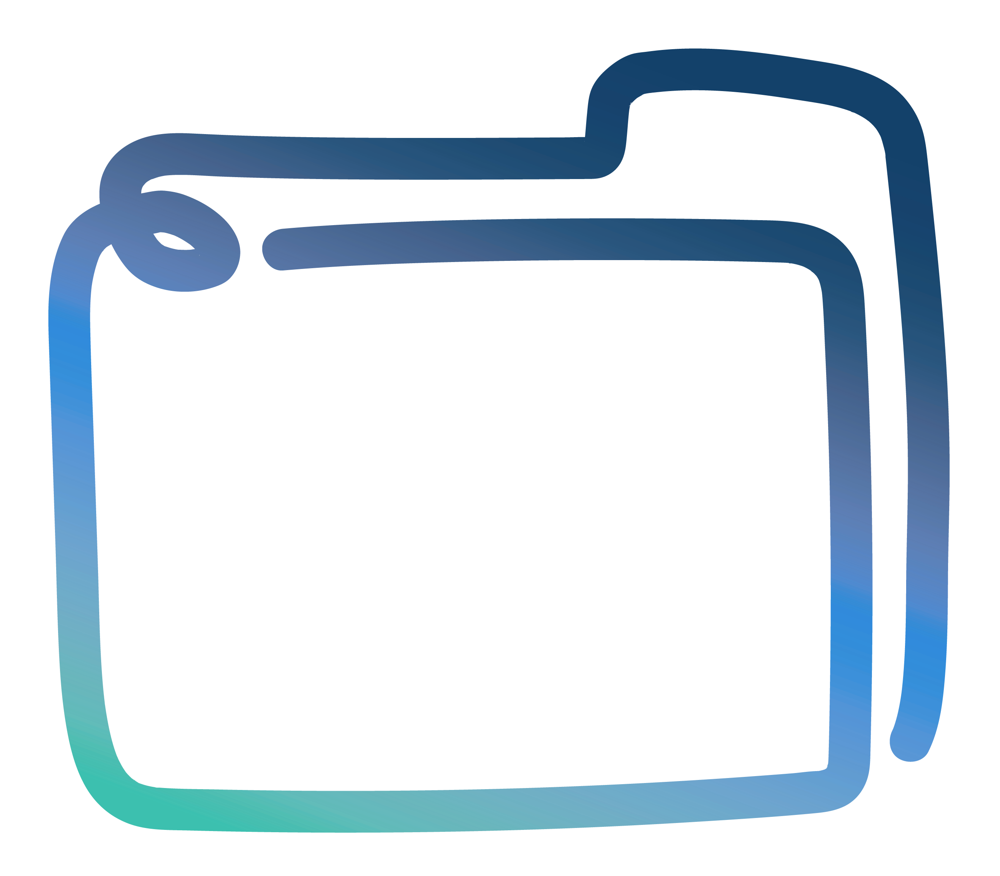

Instant productivity for Kubernetes
The Knot environment ties together a complete set of user-facing tools to help you unleash your productivity on Kubernetes. Install Knot and use your browser to create notebooks, run workflows, launch services, and manage datasets. Focus on doing the actual work and let Kubernetes handle scaling.


Everything included
Engage with Kubernetes faster and easier. Knot includes JupyterHub for writing your notebooks, Argo Workflows for submitting your workflows, Harbor for storing your private containers and Helm charts, and Grafana for monitoring your infrastructure. All web-based and accessible through the Knot dashboard. No command line necessary.
User management
Users login into the Knot dashboard with their username and password. Single sign-on is automatically configured, so they can transparently switch from one application to the other without logging in again. Under the hood, each user is isolated in a separate Kubernetes namespace.

Data availability
Each user gets a private directory for files which is automatically mounted inside all containers. Run a workflow on some data and continue processing the files in a notebook, or serve the produced results via an externally accesible web server. No need to copy data around.
Service catalogue
In addition to the bundled set of shared applications, Knot allows users to launch private services, like a databases or a web server. Several service templates are already included, but it is easy to extend the environment using Helm charts.
Super-easy to try out!
Fire up a Kubernetes cluster anywhere in the Cloud and have Knot up and running within minutes using a simple command.